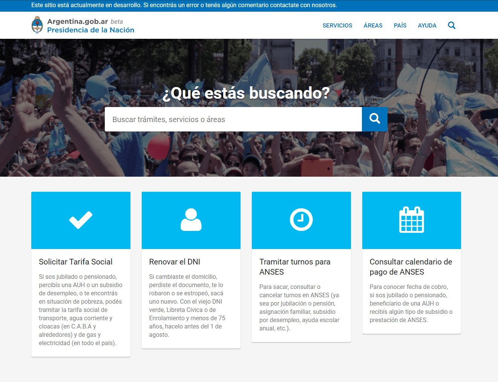
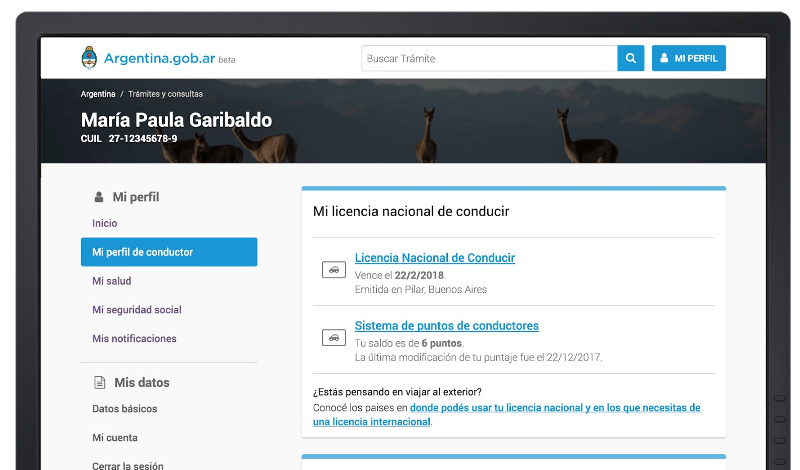

What I can help with
Three ways I usually work. Most engagements start with the first.
Diagnostics and strategy
1 to 6 weeks
An outside read on where you are and what to do first. Digital service reviews, information architecture and content strategy, operating model assessments, prioritised roadmaps. You get a document you can act on, and usually a conversation you have been avoiding.
Recent: an information architecture and content strategy for the Central Bank of Argentina; a website and content review for the Open Government Partnership; a data aggregation framework for CIPPEC; a digital government roadmap for the Canary Islands.
Embedded transformation support
3 to 12 months
Working inside the organisation on the change itself: digital service standards, ways of working, product practice, delivery. This is the slow part. Standards only hold if people use them, so most of the time goes on people rather than documents.
Recent: mentoring and service clinics for the Dominican government's digital transformation programme, through the Public Digital associates network.
Building teams that last
Flexible, often alongside the above
Designing and staffing the multidisciplinary teams an organisation needs to keep delivering on its own. That covers defining roles and profiles, finding candidates, running interviews and building teams from scratch, then mentoring product and delivery managers so the team holds together long after it is formed. I've built product practices from zero in a national government, a consultancy, and a growing product company.
Recent: a capability diagnostic of the service teams in the Dominican Republic to decide what to hire for.
I work on my own, embedded in your team, or with trusted associates when a project needs a wider set of skills.
What the work needs, when it needs it
In one week this job can mean interviewing users, critiquing a design, rewriting a service guide, restructuring a team, and presenting to a minister. Over fifteen years I've worked in most of those seats: digital strategy, user research and interviews, content design and information architecture, UI and design critique, hiring and team building, roadmaps and delivery, communications, and the political conversation that decides whether any of it ships.
Most organisations call me when their digital work has become fragmented: too many initiatives, unclear priorities, teams pulling in different directions. I help turn that into a clear strategy, with an agreed view of what matters, in what order, and who needs to do it.
You can hire better specialists than me in any one of those crafts. What I bring is the ability to hold the whole shape of a problem, talk credibly with every specialist in the room, and tell you which of them you need. Sometimes that person is not me, and I will say so.
Who I've worked with
Governments and public institutions in Argentina, the Dominican Republic and Spain. The Central Bank of Argentina. International organisations including the Open Government Partnership. The Public Digital associates network. Private companies including Shell Energy UK.
Selected work
Government of Argentina A thousand websites unified into one national platform, from zero to more than ten million monthly users.


The Argentine government's digital presence was spread across more than a thousand separate websites, each with its own domain, design, voice and standards. A citizen looking for a service had no reliable place to start, and no two agencies described the same service the same way.
As National Director of Digital Services I led a team of more than fifty people implementing a single-domain strategy for the whole national administration. We built argentina.gob.ar as the single official channel and migrated a thousand existing sites into it. Alongside it we launched Mi Argentina, the citizen platform for personal documents and transactions, and a national appointments system for government offices.
The standards mattered as much as the platforms. We published digital service standards for government websites and mobile applications, catalogued every government service and rewrote their guides in plain language with the communications office of every ministry and agency, and built a citizen satisfaction strategy out of manuals, front-desk training and feedback platforms.
By the end of 2018 the site had gone from zero to more than ten million monthly users. Mi Argentina laid the groundwork for the digital driver's licence, digital vehicle credentials and the digital national ID. Argentina.gob.ar is still the country's single official channel for government information and services.
I spoke about this work at DrupalGovCon 2018: watch the talk.
Public sector, Dominican Republic Mentoring product and delivery teams in a national digital transformation programme.
Through the Public Digital associates network, I work with the Dominican government's digital transformation programme, which is standing up a new national digital government approach.
I started by mentoring product managers and delivery managers one to one, and working with them on how multidisciplinary teams can deliver public services iteratively. Alongside that I ran clinics with individual service transformation teams: short working sessions that take a team through what they are doing, how they are doing it, and how to keep going with our ways of working after we leave.
One of those teams launched a fully digital travel permit for minors in May 2026. Read the government's announcement (in Spanish).
More recently I have worked on the capability side, running a diagnostic across the service teams to map where each discipline stands and what to hire for, and on how the state buys technology.
All of this is ongoing. My role is to supply inputs and criteria taken from my experience. The decisions belong to the Dominican counterparts, and the aim is to leave capability behind rather than dependency.
Central Bank of Argentina A new information architecture and content strategy for a site four very different audiences use for four different reasons.
In 2019 the Central Bank of Argentina asked me to define the information architecture and content strategy its website is now built on. The site carries information people use to make consequential decisions: interest rates, statistics, procedures, financial education. It was organised around the institution rather than the people using it. A citizen checking a fixed-term deposit rate, a journalist on deadline, a financial institution filing a procedure and an academic pulling historical data need different things and take different routes through a site.
I led the work with an associate. We benchmarked reference central banks, interviewed content producers, systems teams and end users, and iterated on wireframes until the bank's own teams and suppliers could build from them.
The proposal restructured the site around audiences rather than departments, made search the primary route into content, gave financial education its own space in plain language, and rewrote procedures as actions: "Pay a financial penalty" instead of "Financial penalties". Every piece of content was designed around how someone would look for it.
We also defined content types, URL strategy, taxonomy and metadata, public feedback mechanisms, and a digital team model the institution could use to keep the strategy current after we left.
City of Buenos Aires A 30-person team, 200,000 monthly users, and a city government's main public channel through a pandemic.
As Digital Experience Director I led a team of thirty UX practitioners, content designers and developers working on buenosaires.gob.ar, used by more than 200,000 people each month, and set the digital product standards every part of the city government built to.
Three months in, the pandemic arrived. The team moved from fully co-located to fully distributed within weeks, and the website became the city's official channel for emergency communication and public health information. We kept it running, established new ways of working for a team that had never worked remotely, and shipped a new version of the site and its design system through the same period.
Earlier, as Creativity and Usability Manager in the city's e-Gov office, I led the original single-domain strategy that unified four hundred separate city websites, along with the relaunch of the City Map and the Cómo llego journey planner app.
Open Government Partnership A website and content review that reshaped their development roadmap.
The Open Government Partnership's website is how it reaches its members and the public, and it had grown to the point where usability, content management and the team's own processes worked against each other.
I evaluated the site and produced a report with recommendations on user experience, on how web content is managed and governed, and on how the team works on it day to day.
The recommendations fed into the organisation's development roadmap and shaped its content strategy and operational approach.
Also: product leadership for Shell Energy UK's mobile app at Kin + Carta (now Valtech), serving more than 130,000 monthly users; a digital government roadmap for the Canary Islands; process mapping for ERP and CRM implementation at Orilat; a data aggregation and visualisation framework for CIPPEC; and Tamiz, a public procurement SaaS product I took from zero to launch at EVM.
My full background is on LinkedIn.
How I work
Adoption over deliverables
A strategy nobody follows is a document. I would rather leave a team that works differently than a report that reads well.
With the team you have
The goal is that the organisation keeps going without me, which means mentoring and hiring as much as advising.
Start with real services and real users
The starting point is what a citizen or a customer is trying to do, before the org chart or the technology roadmap.
Plain language throughout
In the services we write for the people who use them, and in the conversations about what to do next.
Contact
I take on diagnostics, transformation programmes and team-building engagements with governments, public institutions and private organisations. To discuss a possible engagement, write to me with a brief description of your organisation and what you are trying to change.
If you are not sure yet whether I am the right fit, send me a few lines about your situation anyway. I will tell you honestly whether I can help and, if I can't, who might.
julianrod@gmail.com